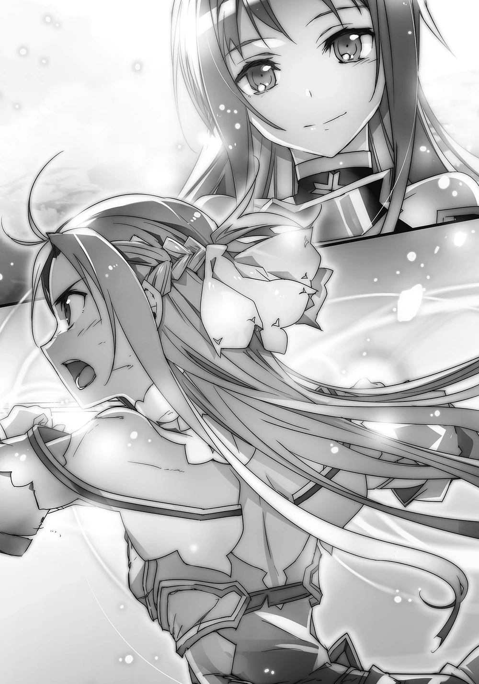
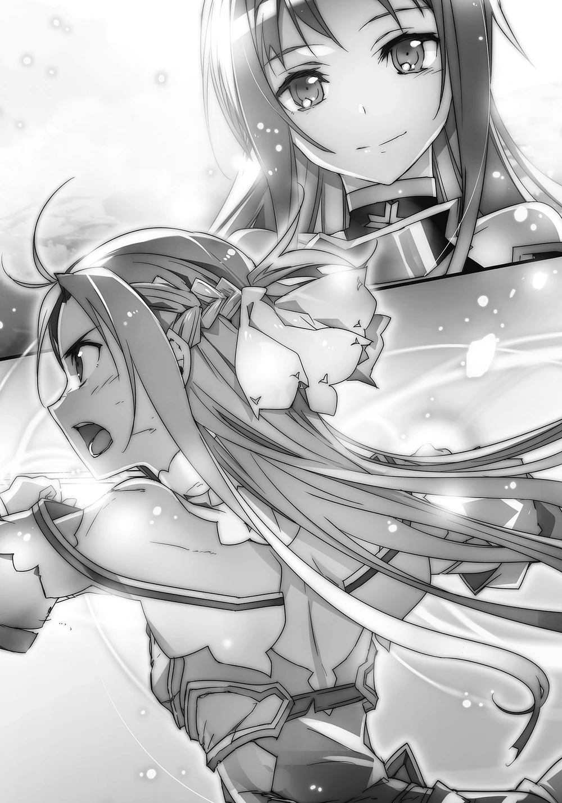

Sword Art Online Volume 18 - Alicization Lasting
Sinopsis
"Definitivamente no dejaré que la voluntad, la sangre y lagrimas de todos sea en vano. ¿Puedes ayudarme, Asuna?"
"------ Es Kirito-kun. Mi Kirito-kun, regresó..."
En el segundo día del «experimento de carga final», Underworld entero se ha hundido en un caos. El ejercito del Territorio Oscuro, dirigidos por el Dios de la Oscuridad Vector, son los usuarios desde el «mundo real»......
Engañosamente invoca, como refuerzos, a decenas de miles de jugadores de VRMMO desde América, China y Korea a Underworld como Caballeros Oscuros. Desde que el Integrity Knight Bercouli, el Comandante supremo del Ejército del Imperio Humano, cayó, Alice, su estimada aprendíz, se dirige apresuradamente al «World End Altar» por cuenta propia. Gabriel, perdiendo la super cuenta del «Dios de la Oscuridad Vector», ingresa de nuevo como «Subtlizer», derrota a Sinon en un duelo, y persigue a Alice.
Mientras tanto, en el campo de batalla donde el Ejército del Imperio Humano es atrapado por los Caballeros de la Oscuridad abrumadoramente superandolos en número, las desesperadas batallas de Asuna con la ayuda de Lisbeth, Sakuya y los otros se torna en vano. Eventualmente Kirito es capturado por el enemigo en su estado de ausencia.
El enemigo es «PoH», como su rival desde los tiempos de SAO, uno de los miembros restantes del gremio Laughing Coffin. Como liberando todo el resentimiento acumulado por años, PoH se aproxima a hundir sus colmillos en Kirito---!! Repentinamente, desde el corazón de Kirito, resuena una voz. Pertenece a su mejor amigo con quien vivió, con quien reía y con el que luchaba junto a él. La voz de uno y solo uno, su mejor amigo.
Finalmente, Kirito revive. Con ordenes de salvar a Alice, quien determine el destino del mundo, Asuna, quien es la persona que más ama, todos los demás quienes apresuradamente fueron a ayudar, y todo objeto viviendo en Underworld.
Ilustraciones
Las siguientes son las ilustraciones que se incluyen en el volumen 18:
 
